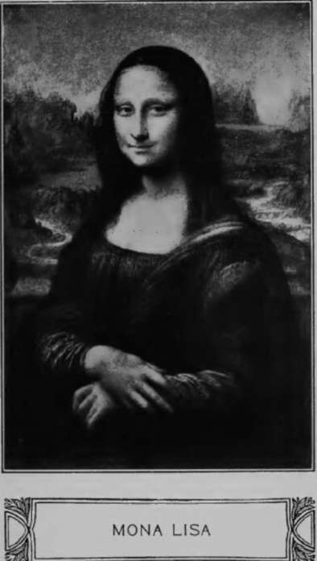

Chapter IV
Description
This section is from the book "Leonardo Da Vinci: A Psychosexual Study Of An Infantile Reminiscence", by Sigmund Freud. Also available from Amazon: Leonardo da Vinci: A Psychosexual Study of an Infantile Reminiscence.
Chapter IV
The vulture fantasy of Leonardo still absorbs our interest. In words which only too plainly recall a sexual act ("and has many times struck against my lips with his tail"), Leonardo emphasizes the intensity of the erotic relations between the mother and the child. A second memory content of the fantasy can readily be conjectured from the association of the activity of the mother (of the vulture) with the accentuation of the mouth zone. We can translate it as follows: My mother has pressed on my mouth innumerable passionate kisses. The fantasy is composed of the memories of being nursed and of being kissed by the mother.
A kindly nature has bestowed upon the artist the capacity to express in artistic productions his most secret psychic feelings hidden even to himself, which powerfully affect outsiders who are strangers to the artist without their being able to state whence this emotivity comes. Should there be no evidence in Leonardo's work of that which his memory retained as the strongest impression of his childhood? One would have to expect it. However, when one considers what profound transformations an impression of an artist has to experience before it can add its contribution to the work of art, one is obliged to moderate considerably his expectation of demonstrating something definite. This is especially true in the case of Leonardo.
He who thinks of Leonardo's paintings will be reminded by the remarkably fascinating and puzzling smile which he enchanted on the lips of all his feminine figures. It is a fixed smile on elongated, sinuous lips which is considered characteristic of him and is preferentially designated as "Leonardesque." In the singular and beautiful visage of the Florentine Monna Lisa del Giocondo it has produced the greatest effect on the spectators and even perplexed them. This smile was in need of an interpretation, and received many of the most varied kind but none of them was considered satisfactory. As Gruyer puts it: "It is almost four centuries since Monna Lisa causes all those to lose their heads who have looked upon her for some time.""
Muther states:6 "What fascinates the spectator is the demoniacal charm of this smile. Hundreds of poets and writers have WTitten about diis woman, who now seems to smile upon us seductively and now to stare coldly and lifelessly into space, but nobody has solved die riddle of her smile, nobody has interpreted her thoughts. Everything, even the scenery is mysterious and dream-like, trembling as if in the sultriness of sensuality."
The idea diat two diverse elements were united in the smile of Monna Lisa has been felt by many critics. They therefore recognize in the play of features of the beautiful Florentine lady the most perfect representation of the contrasts dominating the love-life of the woman which is foreign to man, as that of reserve and seduction, and of most devoted tenderness and inconsiderateness in urgent and consuming sensuality. Miintz'7 expresses himself in this manner: "One knows what indecipherable and fascinating enigma Monna Lisa Gioconda has been putting for nearly four centuries to the admirers who crowd around her. No artist (I borrow the expression of the delicate writer who hides himself under the pseudonym of Pierre de Corlay) has ever translated in this manner the very essence of femininity: the tenderness and coquetry, the modesty and quiet voluptuousness, die whole mystery of die heart which holds itself aloof, of a brain which reflects, and of a personality who watches itself and yields nothing from herself except radiance. ..." The Italian An-gelo Conti saw58 the picture in the Louvre illumined by a ray of the sun and expressed himself as follows: "The woman smiled with a royal calmness, her instincts of conquest, of ferocity, the entire heredity of the species, the will of seduction and ensnaring, the charm of the deceiver, the kindness which conceals a cruel purpose, all that appears and disappears alternately behind the laughing yeil and melts into the poem o,£ her smile. . . . Good and evil, cruelty and compassion, graceful and catlike, she laughed. . . ."
Leonardo painted this picture for four years, perhaps from 1503 until 1507, during his second sojourn in Florence when he was about the age of fifty years. According to Vasari he applied die choicest artifices in order to divert the lady during die sittings and to hold that smile firmly on her features. Of all the gracefulness that his brush reproduced on die canvas at diat time the picture preserves but very little in its present state. During its production it was considered the highest that art could accomplish; it is certain, however, that it did not satisfy Leonardo himself, that he pronounced it as unfinished and did not deliver it to die one who ordered it, but took it widi him to France where his benefactor Francis I, acquired it for die Louvre.
Let us leave die physiognomic riddle of Monna Lisa unsolved, and let us note die unequivocal fact that her smile fascinated the artist no less than all die spectators for diese 400 years. This captivating smile had thereafter returned in all of his pictures and in diose of his pupils. As Leonardo's Monna Lisa was a portrait we cannot assume diat he has added to her face a trait of his own so difficult to express which she herself did not possess. It seems, we cannot help but believe that he found this smile in his model and became so charmed by it that from dien on he endowed it on all die free creations of his fantasy. This obvious conception is, e.g., expressed by A. Kon-stantinowa in the following manner:59
"During the long period in which the master occupied himself with the portrait of Monna Lisa del Gioconda, he entered into the physiognomic delicacies of this feminine face with such sympathy of feeling that he transferred these creatures, especially the mysterious smile and the peculiar glance, to all faces which he later painted or drew. The mimic peculiarity of Gioconda can even be perceived in the picture of John the Baptist in the Louvre. But above all they are distinctly recognized in the features of Mary in the picture of St. Anne of the Louvre."
Continue to:
Tags
Leonardo da Vinci, Sigmund Freud, mentality, psychoanalytic, sexuality